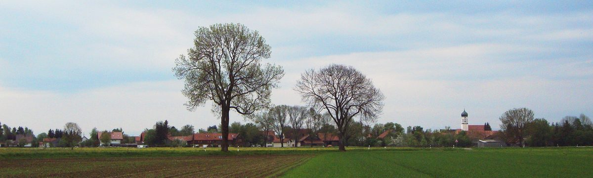

주민이 운영하는 풍차 7기의 독일 푹스탈, 11월 26일 마을 전력망 끊고 재생에너지만으로 버티는 정전 실험

연구사업 '푹스탈 로이히테트'…레더·아쉬 두 마을을 상위 전력망에서 떼어 내 풍력·태양광·배터리로 전기 공급 시험, 양로원·중학교만 발전기로 유지
독일 바이에른주 란츠베르크군의 푹스탈 면이 11월 26일 관내 두 마을을 상위 전력망에서 떼어 내고, 면이 가진 재생에너지만으로 전기를 대는 '계획 정전' 실험을 한다. 대정전이 닥쳤을 때 지역 재생에너지로 모든 가구에 전기를 공급할 수 있는지 확인하려는 연구사업 '푹스탈 로이히테트(푹스탈이 빛난다)'의 하나로, 여러 대학과 지역 전력회사 레히베르케(LEW)가 함께 한다. 실험 당일 오전에는 레더·아쉬 두 마을로 들어가는 인입선 4개를 끊는 전환 작업으로 약 30분간 전기가 나가고, 오후에 본 실험이 진행되는 동안 양로원과 중학교에만 발전기로 전기를 댄다. 전기는 면 소유 숲에 선 풍차 7기와 지상 태양광, 면의 배터리 저장장치에서 나오며, 주민들이 운영하는 이 풍력단지는 한 해 약 2,400만kWh를 만들어 3인 가구 6,700가구분 전기를 대고 이산화탄소 1만7,700톤을 줄인다. 면은 2024년과 2025년 두 차례 현장 시험으로 자료를 쌓았고, 11월 3일 주민 설명회를 열어 실험 내용을 알린다. 슈테판 푈크 면장은 계획대로라면 늦어도 15분 안에 전기가 돌아오고 "어쩌면 몇 분 만에" 돌아올 수도 있다고 내다봤다.
시민에너지 관점
주민이 운영하는 풍차 7기가 6,700가구분 전기를 만들고, 그 전기로 대정전 때도 마을이 버틸 수 있는지 시험한다는 것은 재생에너지가 발전 수익을 넘어 지역의 안전망이 될 수 있음을 보여 준다. 바람과 햇빛만으로는 전기가 불안정하다는 우려가 늘 따르지만, 푹스탈은 배터리를 붙이고 두 해에 걸쳐 현장 자료를 모아 그 질문에 직접 답하려 하고 있다. 발전소의 주인이 마을일 때 정전 대비처럼 돈으로 따지기 어려운 일에도 설비를 쓸 수 있고, 주민도 실험을 남의 일이 아닌 자기 일로 받아들이게 된다. 국내 마을 태양광·풍력도 배터리와 마을 단위 배전을 함께 묶어, 재난 때 스스로 전기를 지킬 수 있는 지역 소유 에너지 단지로 설계해야 한다.
출처: 메르쿠어(Merkur.de) 2026-10-24 Katrin Woitsch 원문 보기
住民が運営する風車7基のドイツ・フックスタール、11月26日に集落の送電網を切り離し再エネだけで乗り切る停電実験
研究事業「フックスタール・ロイヒテット」…レーダー・アッシュの2集落を上位送電網から外し風力・太陽光・蓄電池で電力供給を試験、老人ホームと中学校のみ発電機で維持
ドイツ・バイエルン州ランツベルク郡のフックスタール村が11月26日、域内の2つの集落を上位の送電網から切り離し、村が持つ再生可能エネルギーだけで電気を賄う「計画停電」の実験を行う。大規模停電が起きた際に地域の再エネで全世帯に電気を供給できるかを確かめる研究事業「フックスタール・ロイヒテット（フックスタールが輝く）」の一環で、複数の大学と地域の電力会社レヒヴェルケ（LEW）が参加する。当日の午前にはレーダーとアッシュの2集落に引き込む4本の配電線を切る切り替え作業で約30分停電し、午後に本実験が行われる間は老人ホームと中学校だけに発電機で電気を送る。電気は村有林に立つ風車7基と地上設置の太陽光、村の蓄電池から供給され、住民が運営するこの風力発電所は年間約2,400万kWhを発電して3人世帯6,700世帯分の電気を賄い、二酸化炭素を1万7,700トン削減している。村は2024年と2025年の2回の現地試験でデータを積み重ねており、11月3日に住民説明会を開いて実験内容を知らせる。シュテファン・フェルク村長は、計画どおりなら遅くとも15分以内に電気は戻り、「もしかすると数分で」戻るかもしれないと見通した。
市民エネルギーの視点
住民が運営する風車7基が6,700世帯分の電気を生み、その電気で大停電の際にも集落が持ちこたえられるかを試すことは、再エネが発電収益を超えて地域の安全網になりうることを示している。風と太陽だけでは電気が不安定だという懸念は常につきまとうが、フックスタールは蓄電池を加え、2年にわたって現地データを集めてその問いに直接答えようとしている。発電所の持ち主が地域であってこそ、停電への備えのように金銭では測りにくいことにも設備を生かせ、住民も実験を他人事ではなく自分事として受け止める。韓国の集落の太陽光・風力も、蓄電池と集落単位の配電を組み合わせ、災害時に自ら電気を守れる地域所有のエネルギー拠点として設計すべきだ。
出典: メルクール（Merkur.de） 2026-10-24 Katrin Woitsch 原文を読む
拥有7台居民运营风机的德国富克斯塔尔将于11月26日切断村庄电网，进行仅靠可再生能源支撑的停电实验
研究项目"富克斯塔尔在发光"…将莱德和阿施两村从上级电网断开，测试风电、光伏和储能供电，仅养老院和中学由发电机维持供电
德国巴伐利亚州兰茨贝格县的富克斯塔尔镇将于11月26日把辖区内两个村庄从上级电网断开，进行只靠本镇可再生能源供电的"计划停电"实验。这是研究项目"Fuchstal leuchtet（富克斯塔尔在发光）"的一部分，旨在确认大停电发生时能否依靠本地可再生能源为所有家庭供电，多所大学和地区电力公司Lechwerke（LEW）参与其中。实验当天上午，为切断通往莱德（Leeder）和阿施（Asch）两村的4条进线进行切换作业，将停电约30分钟；下午正式实验期间，只有养老院和中学由发电机供电。电力来自镇有林中的7台风机、地面光伏和镇里的储能电池，这座由居民运营的风电场每年发电约2400万千瓦时，可满足6,700户三口之家的用电，并减少1.77万吨二氧化碳排放。该镇已在2024年和2025年两次现场试验中积累数据，并将于11月3日召开居民说明会介绍实验内容。镇长Stephan Völk预计，若一切按计划进行，最迟15分钟内就能恢复供电，"甚至可能几分钟后"就恢复。
市民能源视角
居民运营的7台风机生产6,700户的电力，还要测试村庄能否靠这些电力挺过大停电，这说明可再生能源不只是发电收益，还可以成为地方的安全网。人们总担心仅靠风和阳光供电不稳定，但富克斯塔尔加装了储能，并用两年时间收集现场数据，试图直接回答这个问题。只有发电设施的主人是本地社区，才能把设备用于停电防范这类难以用金钱衡量的事情，居民也会把实验当作自己的事。韩国的村级光伏和风电也应把储能和村级配电结合起来，设计成灾害时能自行保障电力的地方所有能源园区。
来源: 《Merkur.de》 2026-10-24 Katrin Woitsch 查看原文
German municipality of Fuchstal, home to seven resident-run wind turbines, will cut its villages off the grid on Nov. 26 to test running on renewables alone
Under the research project Fuchstal leuchtet, the villages of Leeder and Asch will be disconnected from the upstream grid and supplied by wind, solar and batteries; only a care home and a secondary school stay on generators
Fuchstal, a municipality in the Bavarian district of Landsberg, will disconnect two of its villages from the upstream grid on Nov. 26 and try to keep them supplied only with the municipality's own renewable energy in a planned blackout. The test is part of the research project Fuchstal leuchtet (Fuchstal shines), which aims to find out whether local renewables could power every household in a major blackout, and involves several universities and the regional utility Lechwerke (LEW). On the morning of the test, power will go out for about 30 minutes while four feeder lines into the villages of Leeder and Asch are cut, and during the main experiment in the afternoon only a care home and a secondary school will be kept running on generators. The electricity will come from seven wind turbines in the municipal forest, ground-mounted solar arrays and the municipality's battery storage; the resident-run wind farm produces just under 24 million kWh a year, enough for 6,700 three-person households, and saves 17,700 tonnes of CO2. The municipality gathered data in two field trials in 2024 and 2025 and will hold a public information meeting on Nov. 3. Mayor Stephan Völk expects power to return within 15 minutes at most if all goes to plan, "perhaps even after a few minutes."
Citizen Energy View
Seven resident-run turbines that generate power for 6,700 households, now being tested to see whether they can carry villages through a blackout, show that renewables can be a local safety net and not only a source of revenue. Doubts that wind and sun alone are too unstable are always raised, but Fuchstal has added batteries and spent two years collecting field data to answer that question directly. When the community owns the plant, it can use it for things that are hard to price, such as blackout preparedness, and residents treat the test as their own business rather than someone else's. Village solar and wind projects in Korea should likewise be designed together with batteries and village-level distribution as locally owned energy hubs that can keep the lights on in a disaster.
Source: Merkur.de 2026-10-24 Katrin Woitsch Read the original